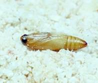
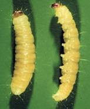
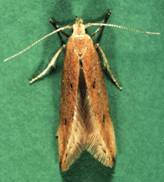
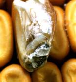

| Home |
| SUGARCANE |
PRIMARY STORAGE PEST |
INTERNAL FEEDERS |
| 1. Rice weevil |
| 2. Lesser grain borer |
| 3. Angoumois grain moth |
| 4. Pulse beetle |
| 5. Cigarette beetle |
| 6. Drug store beetle |
| 7. Tamarind Beetle |
| 8. Sweet Potato weevil |
| 9. Potato tuber moth |
| 10. Arecanut beetle |
EXTERNAL FEEDERS |
| 11. Red flour beetle |
| 12. Indian meal moth |
| 13. Fig moth or almond moth |
| 14. Rice moth |
| 15. Khapra beetle |
SECONDARY STORAGE PEST |
| 16. Saw toothed grain beetle |
| 17. Long headed flour beetle |
| 18. Flat grain beetle |
| 19. Grain lice |
| 20. Grain mite |
| Questions |
| Download Notes |
STORED GRAIN :: PRIMARY STORAGE PEST :: INTERNAL FEEDERS :: ANGOUMOIS GRAIN MOTH
3. Angoumois grain moth: Sitotroga cerealella (Gelechiidae: Lepidoptera)
Distribution and status
Worldwide. In the Indian sub continent, the pest is more abundant in the mountainous areas or where the climate is rather mild.
Host range : Paddy, wheat, maize, sorghum, barley, oats etc.
Bionomics :
|  |  |  |
A full grown larva is about 5 mm long, with a white body and yellow brown head. The adult is a buff, grey yellow, brown or straw coloured moth, measuring about 10-12 mm in wing expanse. The characteristic feature is the presence of the narrow pointed wings fringed with long hair.
Breeding takes place from April to October. The insect overwinters as a hibernating larva and as the season warms up, it pupates in early spring. Females start laying eggs singly or in batches on or near the grain. The eggs are small and white, when freshly laid, turning reddish later on. A single female lays, on an average, 150 eggs, usually within a week after mating. Egg period is 4-8 days. The larval stage may last about 3 weeks. Before pupation, the larva constructs a silken cocoon in a cavity. Pupal period is 9 -12 days and the adult live for about 4 - 10 days. During the active season, the life-cycle is completed in about 50 days. Several generations completed in a year.
Damage symptoms :
 The damage is at its maximum during the monsoon. Only the larvae cause damage by feeding on the grain kernels before harvest and also in store. The larva bores into grain and feeds on its contents. Exit holes of 1 mm diameter with or without a trap door, are seen on the affected cereal grains. As it grows, it extends the hole which partly gets filled with pellets of excreta. It imparts unhealthy appearance and smell. In a heap of grain, the upper layers are most severely affected.